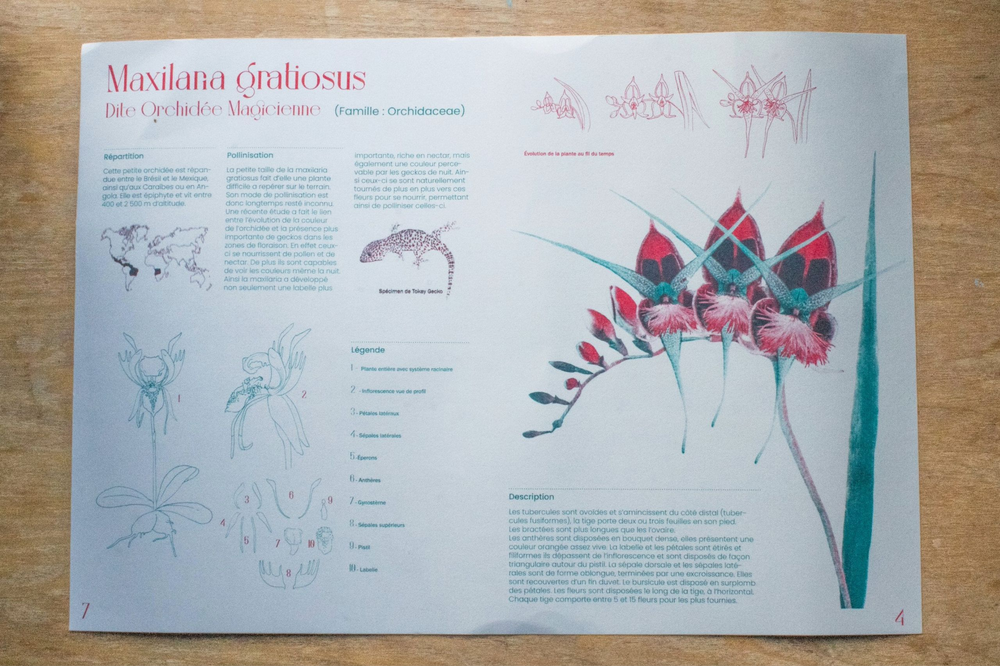
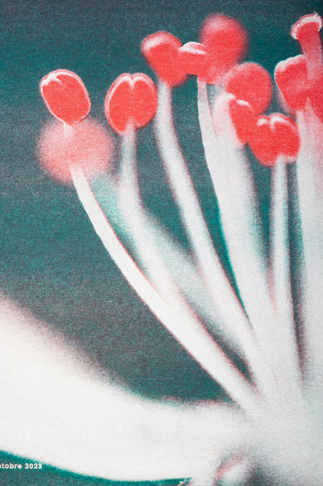
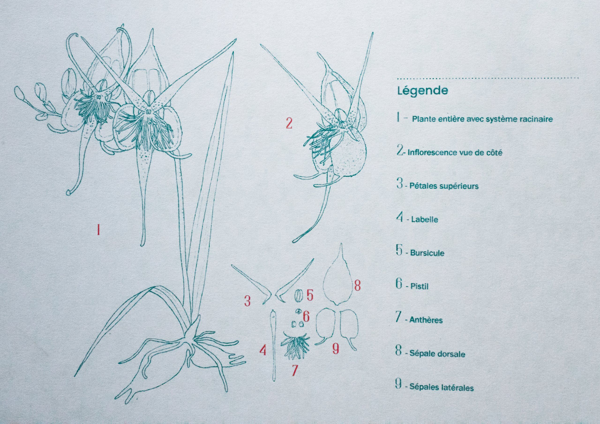
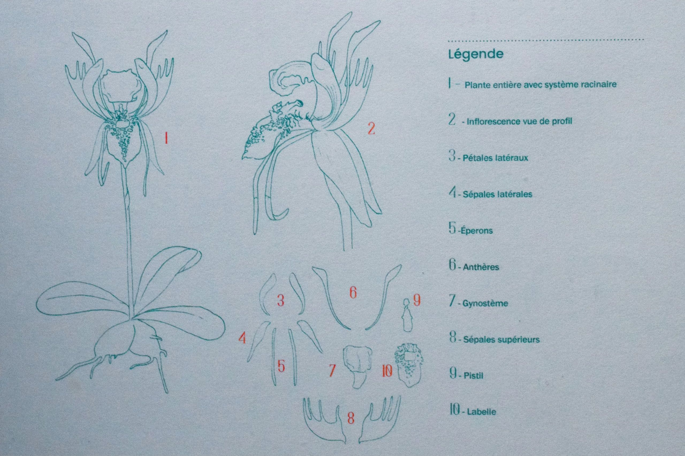
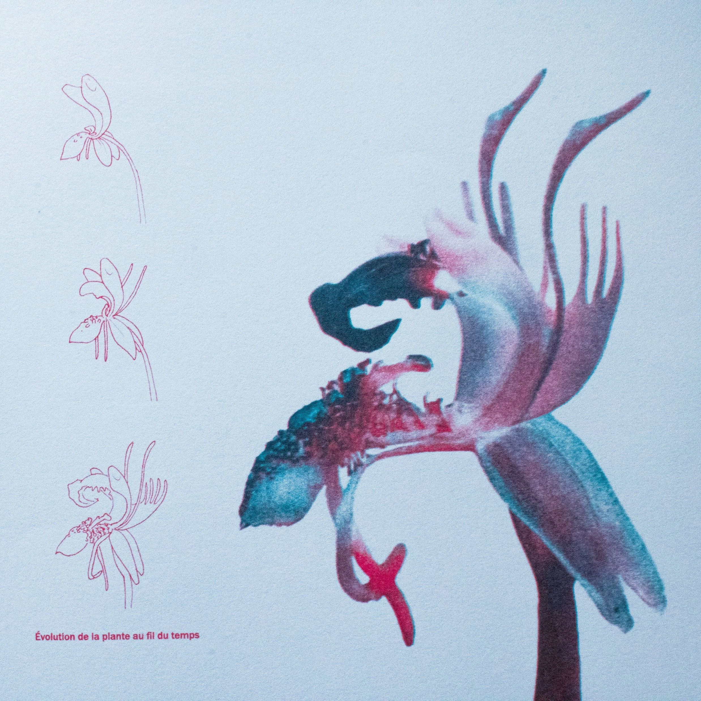
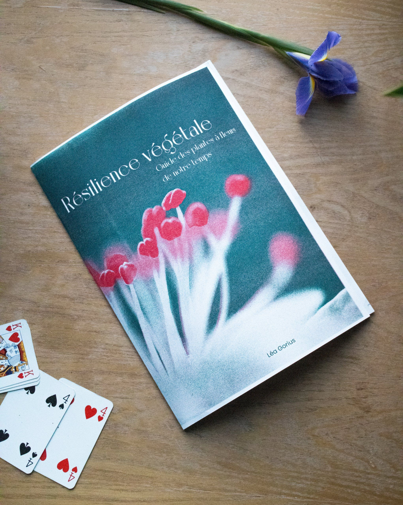

En se basant sur des articles de la littérature scientifique parlant de l'avenir des végétaux vis à vis du réchauffement climatique, nous devions imaginer une flore du futur en se basant sur un critère d'évolution précis. Ici, les plantes ont évolué pour s'adapter à la disparition des insectes pollinisateurs, changeant alors subtilement de forme pour en attirer de nouveaux. Les plantes ont été créé en assemblant des plantes existantes grâce au photomontage, puis les planches scientifiques ont été élaborées en conséquence.
     